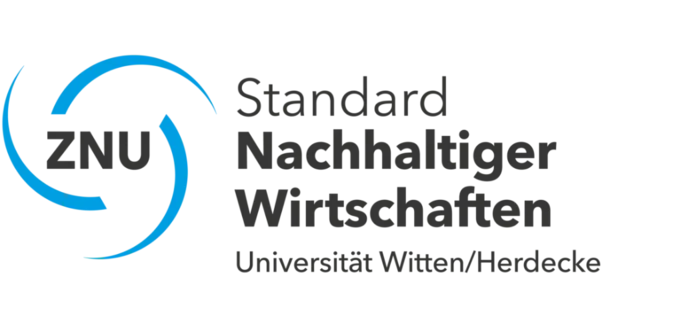
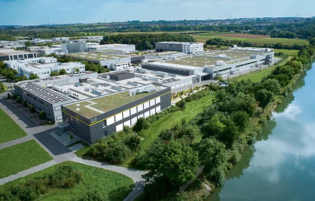
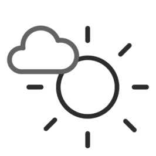
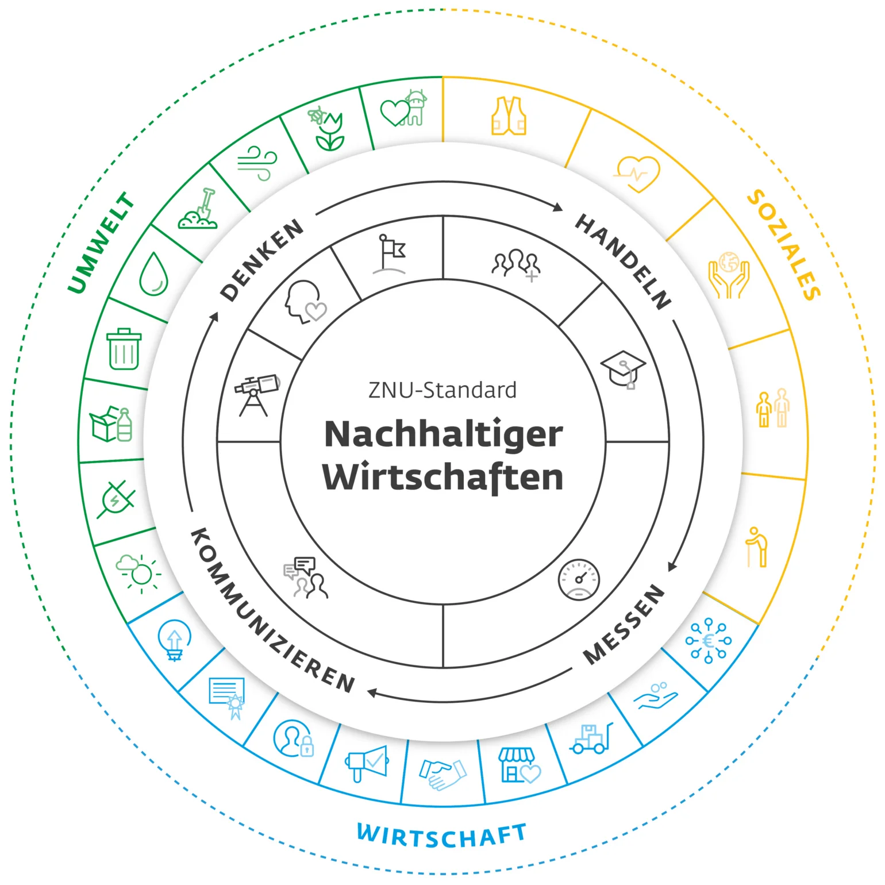
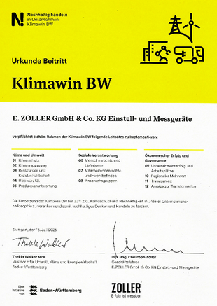
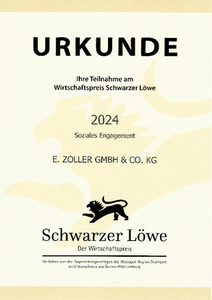
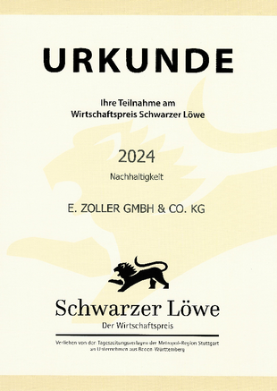
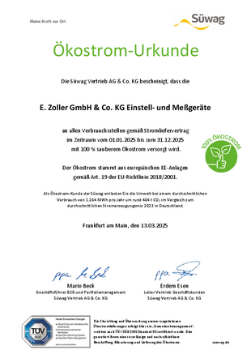
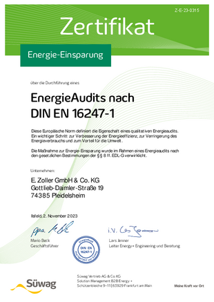
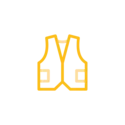

Helene Zoller Garten
Für die Erholung des ZOLLER Teams sowie für Bienen, Schmetterlinge und weitere Insekten wurde ein 500 Quadratmeter großer Garten geschaffen.
Mehr erfahren


Nachhaltigkeit spielt eine zentrale Rolle in der Unternehmensphilosophie von ZOLLER. Wir stehen nicht nur für wirtschaftlichen Erfolg, sondern übernehmen auch Verantwortung für Umwelt und Gesellschaft. Unser gesamtes Portfolio aus präzisen Messgeräten zum Einstellen, Messen und Prüfen von zerspanenden Werkzeugen, Software, Schnittstellen, Cloudservices und Lösungen zur Automation von Werkzeugprozessen trägt zum Ressourcenschutz bei. Wir engagieren uns sozial und bieten in unserem Unternehmen faire Arbeitsbedingungen.
Die Integration nachhaltiger Praktiken in unsere Geschäftsprozesse ist für ZOLLER von entscheidender Bedeutung. Wir sind uns bewusst, dass unsere Aktivitäten Auswirkungen auf die Umwelt haben, und setzen daher auf ressourcenschonende Technologien sowie energieeffiziente Produktionsmethoden. Durch den Einsatz umweltfreundlicher Materialien und die Optimierung unserer Logistikprozesse tragen wir aktiv zur Reduzierung unseres ökologischen Fußabdrucks bei. Darüber hinaus fördern wir eine Unternehmenskultur, die Nachhaltigkeit in den Mittelpunkt stellt. Unsere Mitarbeiterinnen und Mitarbeiter werden geschult und motiviert, nachhaltige Entscheidungen zu treffen und innovative Ideen zur Verbesserung unserer Umweltbilanz einzubringen. Wir glauben, dass jeder Einzelne einen Beitrag leisten kann, um unser Unternehmen zukunftsfähig zu gestalten. In den 17 Zielen für nachhaltige Entwicklung aus der Agenda 2030 der Vereinten Nationen sehen wir die Leitlinie für unser eigenes nachhaltiges Handeln.
ZOLLER übernimmt auch soziale Verantwortung. Wir unterstützen lokale Gemeinschaften und setzen uns für faire Arbeitsbedingungen ein. Indem wir ethische Standards in unserer Lieferkette wahren, stellen wir sicher, dass unsere Partnerunternehmen ebenfalls nachhaltig wirtschaften. Insgesamt ist Nachhaltigkeit für ZOLLER nicht nur ein Trend, sondern ein langfristiges Ziel. Wir sind überzeugt, dass verantwortungsvolles Handeln nicht nur zum Schutz unserer Umwelt beiträgt, sondern auch das Vertrauen unserer Kunden stärkt und unsere Wettbewerbsfähigkeit erhöht. Gemeinsam mit unseren Partnern und Kunden arbeiten wir daran, eine nachhaltige Zukunft zu gestalten – für unser Unternehmen und die kommenden Generationen.
Für die Erholung des ZOLLER Teams sowie für Bienen, Schmetterlinge und weitere Insekten wurde ein 500 Quadratmeter großer Garten geschaffen.

Wir produzieren ausschließlich mit Strom aus erneuerbaren Energien. Mit unserer hauseigenen Photovoltaikanlage tragen wir dazu bei.

Unsere Technologien unterstützen Fertigungen dabei, ihre Materialressourcen, Maschinen und Werkzeuge optimal zu nutzen. Das reduziert Fehlteile und steigert die Effizienz im Prozess.

ZOLLER ist ein innovatives Unternehmen, das sich nicht nur durch seine technologische Exzellenz auszeichnet, sondern auch durch sein starkes Engagement für Nachhaltigkeit und Diversität. Wir legen großen Wert darauf, eine Arbeitsumgebung zu schaffen, in der Vielfalt als Stärke gesehen wird.
Mit Mitarbeiterinnen und Mitarbeitern aus 24 unterschiedlichen Nationalitäten fördert das ZOLLER Stammhaus Pleidelsheim eine Kultur des gegenseitigen Respekts und des interkulturellen Austauschs. Diese Vielfalt trägt maßgeblich zur Kreativität, Innovation und Problemlösungskompetenz bei, da unterschiedliche Perspektiven zusammenkommen. Durch gezielte Initiativen und eine offene Unternehmenskultur setzt ZOLLER ein Zeichen für gesellschaftliche Verantwortung und nachhaltiges Wachstum – sowohl ökologisch als auch sozial. Damit zeigt das Unternehmen, dass nachhaltige Entwicklung Hand in Hand mit einer vielfältigen Belegschaft gehen kann, um gemeinsam zukunftsweisende Lösungen zu gestalten.
Unsere internationale Belegschaft ist ein Beweis dafür, dass Vielfalt bei ZOLLER Pleidelsheim nicht nur ein Ziel ist, sondern gelebte Realität – eine Stärke, die uns täglich vorantreibt.

weniger CO2e-
Emissionen bis 2030
Stand 2025: 6695,74 t CO2e
(Ausgangswert 2024: 8804,24 t CO2e)

der A-Lieferanten sollen
bis 2030 aus der Region kommen
Stand 2025: 82 % der A-Lieferanten kommen aus der Region
(Ausgangswert 2024: 70 %)
unserer Verpackungen sollen
bis 2030 wiederverwertbar sein
Stand Ende 2025: 52 % wiederverwertbare Verpackungen
(Ausgangswert 2024: 40 %)

soziale Projekte
bis 2030 unterstützen
Stand Juni 2026: 1 Projekte
(Ausgangswert 2024: 0 Projekte)

Kundenzufriedenheit
bis 2028
1,29 (Schulnote) im Jahr 2025 (bei rund 1000 Befragungen)
(Ausgangswert 2024: 1,33)

Auszubildende/Stunden jährlich
bis 2030
Stand 2025: 6 % Auszubildende/Stunden von der Gesamtmitarbeiteranzahl
(Ausgangswert 2024: 5 %)

 | Früherkennung Welche Themen sind für mein Unternehmen relevant? |
 | Philosophie Welche Werte hat mein Unternehmen? |
 | Ziele Was will ich bis wann erreichen? |
| Integration Wie integriere ich Nachhaltigkeit in die Unternehmensprozesse? |
| Bildung Wie schule ich meine Mitarbeitenden in Sachen Nachhaltigkeit? |
| Dialogkultur Was kommunizieren wir intern und extern zu Nachhaltigkeit? |
| Diagnose Wie wirksam ist mein Nachhaltigkeitsmanagement? |
| Früherkennung Welche Themen sind für mein Unternehmen relevant? |
| Philosophie Welche Werte hat mein Unternehmen? |
| Ziele Was will ich bis wann erreichen? |
| Integration Wie integriere ich Nachhaltigkeit in die Unternehmensprozesse? |
| Bildung Wie schule ich meine Mitarbeitenden in Sachen Nachhaltigkeit? |
| Dialogkultur Was kommunizieren wir intern und extern zu Nachhaltigkeit? |
| Diagnose Wie wirksam ist mein Nachhaltigkeitsmanagement? |







Unsere Aktivitäten sind messbar, überprüfbar und kontinuierlich.
Wir verstehen Nachhaltigkeit als Aufgabe für jeden Tag.

Auf dem ZOLLER-Betriebsgelände gibt es fünf Bienenvölker. Betreut werden sie von einem erfahrenen Imker. Die Präsenz von Bienen unterstützt die Gesundheit lokaler Ökosysteme. Bienen erhöhen die Artenvielfalt, indem sie nicht nur selbst bestäuben, sondern auch andere Bestäuber anlocken.

ZOLLER hat in ganz Deutschland verteilt Servicestandorte. Dadurch ergeben sich kurze Wegstrecken, geringe Anfahrtszeiten und –kosten, weniger Emissionen und letztendlich auch eine hohe Kundenzufriedenheit.

Wir verschenken Seedballs mit Pflanzensamen an Kunden und Lieferanten. Ca. 1.750 Stück haben wir schon verteilt. Seedballs sind eine großartige Möglichkeit, grüne Flächen zu schaffen und die Biodiversität zu erhöhen.


